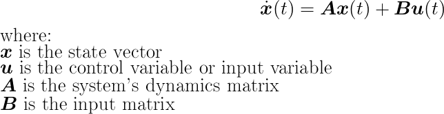
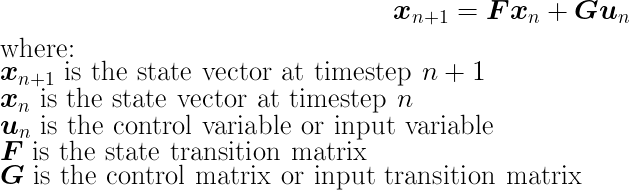
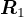
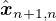

Table of Contents
1 Kalman filter
1.1 Theoretical background
1.1.1 LTI system
The implementation of the code is based on the tutorial from this site.
The Kalman filter starts from the state-space representation of a linear time invariant (LTI) system:

The corresponding discrete form is written as:

The transformation of the continuous and discrete state-space representations can be given by:
The measurement of the system is given by:
1.1.2 Kalman filter
The Kalman filter is acutally a state observer of the LTI-system.
The Kalman filter operates in a "predict-update" loop. In the "predict" step, the estimation of the state vector of the next timestep is calculated along with its unceratinty. And in the "update" step, the measurement of the output vector is obtained and it is used to update the predicted state vector and its unceratinty.
After given an inital estimation of the state vector and its unceratinty, the Kalman filter is able to make its first prediction. Then, after , the measurement of the system output is obtained, the Kalman filter can correct its last prediction by the measured data, get the updated state variables, and make new prediction for the next timestep. The following table provides an intuitive explaination of how kalman filter works:
| index | timestep | operation |
|---|---|---|
| 0 | 0 | initial estimation of and |
| 1 | 0 | predict: make predictions of and |
| 2 | 1 | get the measured system output and its unceratinty  |
| 3 | 1 | update: update current state and unceratinty |
| 4 | 1 | predict: make predictions of and |
| 5 | 2 | get the measured system output and its unceratinty |
| 6 | 2 | update: update current state and unceratinty |
| 7 | 2 | predict: make predictions of and |
| … | … | … |
| 3n-1 | n | get the measured system output and its unceratinty |
| 3n | n | update: update current state and unceratinty |
| 3n+1 | n | predict: make predictions of  and |
| … | … | … |
The corresponding equations for the kalman filter are listed below:
Obviously, it is possible to update it several times before it makes its prediction if the Kalman filter receives several measurements at one timestep.